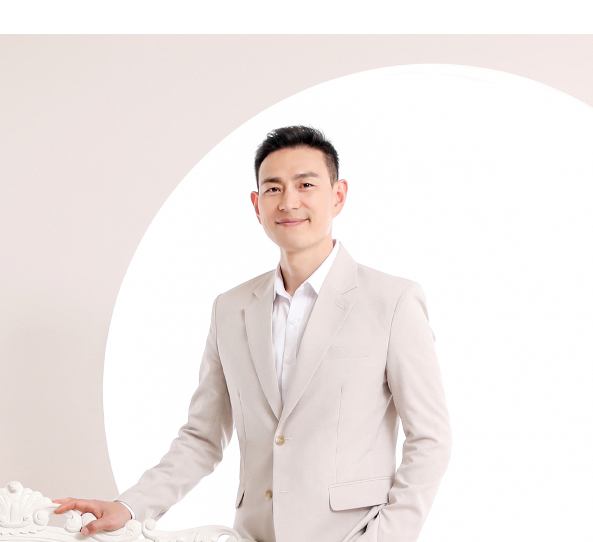

성실함 Diligence
뛰어남보다 성실함이 더 큰 능력입니다.
뛰어남은 포인트로 남지만 성실함은 트렌드가 됩니다. 한순간 뛰어난 사람으로 사는 것보다 매 순간 성실한 사람으로 사는 것을 더 소중하게 생각하고, 그렇게 살아가고자 노력합니다.

사용자에게 필요한 서비스를 파악하고, 전체 그림부터 상세 구현까지 직접 만듭니다.
수많은 선후배님들에겐 미치지 못하지만, 나름 험한 세월을 보냈습니다.
사용자가 필요로 하는 서비스의 특징을 잘 파악하고 소프트웨어로 구현하기 위해, 전반적인 그림을 그리고 상세 구현까지 진행하는 Full Stack Developer로 성실하게 성장하고 있습니다.
어제보다 더 깊어지고 넓어지는 나를 보기 위하여 프론트엔드와 백엔드 두 분야의 배움을 즐기는 중입니다.
뛰어남보다 성실함이 더 큰 능력입니다.
뛰어남은 포인트로 남지만 성실함은 트렌드가 됩니다. 한순간 뛰어난 사람으로 사는 것보다 매 순간 성실한 사람으로 사는 것을 더 소중하게 생각하고, 그렇게 살아가고자 노력합니다.
빨리 가려면 혼자 가고, 멀리 가려면 함께 가라.
동료와의 협업은 때론 더디고 느려 보이지만, 기업의 업무 연속성을 확보하는 가장 확실한 선택입니다. 개발자들은 리팩토링을 통해 서로의 작업 결과를 공유하며 더 넓고 깊어지는 경험을 합니다. 그것을 경험한 사람만이 함께함의 가치를 알고 진정한 협동을 할 수 있습니다.
대범하되, 디테일은 놓치지 않습니다.
선택을 미루는 우유부단함이 아니라, 대범하게 결정하면서도 작은 부분까지 챙기는 센스 있는 세심함을 지키려 노력합니다.